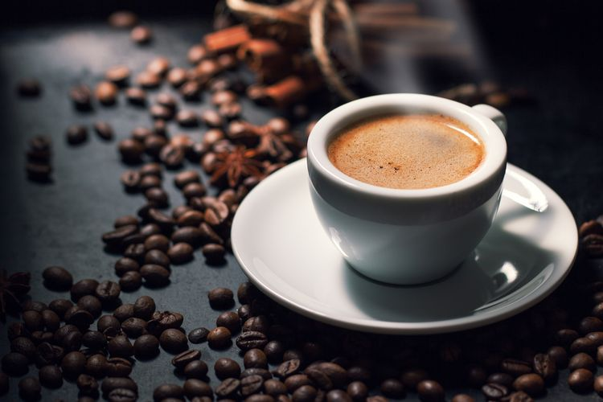
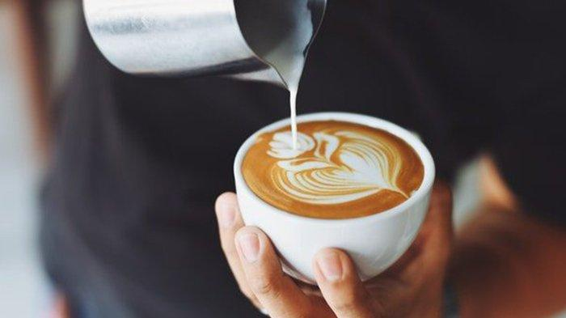

Espresso Coffe
Kopi pekat hasil ekstraksi air bertekanan tinggi melalui bubuk kopi halus, dasar dari banyak minuman seperti Americano, Cappuccino, dan Latte.

Signature Coffe
Kopi khas dengan resep unik, biasanya kombinasi espresso dengan susu, sirup, atau bahan spesial yang menciptakan rasa eksklusif.

Manual Coffe
Kopi diseduh tanpa mesin espresso, menggunakan teknik seperti V60, French Press, atau Aeropress untuk menonjolkan karakter asli biji kopi.